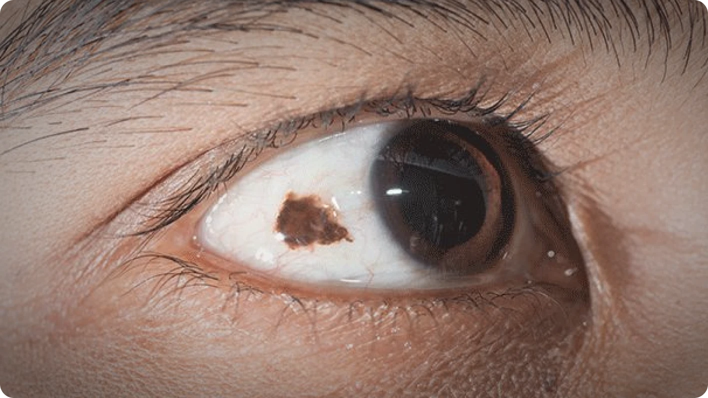
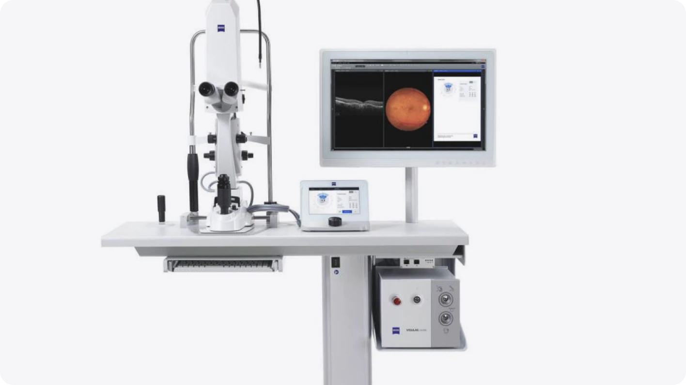
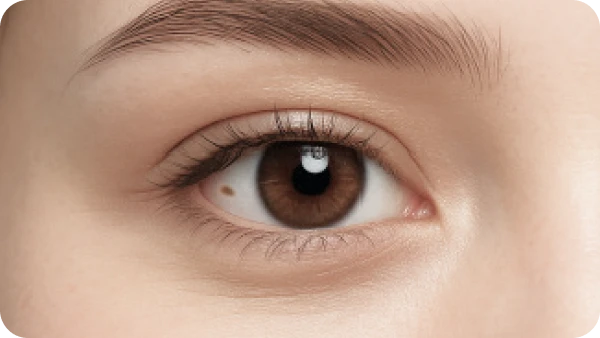
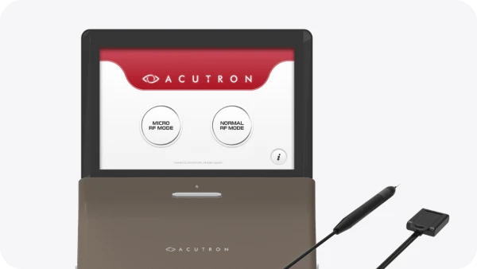

외래 시술
(당일 귀가)
-
점안(안약) 마취
-
시술 5 - 10분 소요
-
시술 후 일상생활 가능
-
흰자위에 생기는 색소성 병변, 결막모반
눈 속에는 정상적으로 멜라닌 세포가 존재합니다. 이 세포가 결막, 즉 흰자위 부위에 모여 갈색 또는 검은색 점처럼 보이는 경우를 결막모반이라고 합니다. 시력에는 큰 영향을 주지 않는 경우가 많지만, 미용적으로 신경 쓰이거나 색·크기 변화가 있다면 검사가 필요합니다.
결막모반 증상, 단순한 점처럼 보여도 진료가 필요합니다.- 눈 흰자위의 갈색·검은 점이 신경 쓰이는 경우
- 점의 색이 진해지거나 크기가 커지는 경우
- 자극감, 이물감, 충혈이 동반되는 경우
- 40~50대 이후 새롭게 생긴 색소 병변인 경우
- 모양이 불규칙하거나 경계가 뚜렷하지 않은 경우

결막모반 치료 방법
위험도가 낮은 일반 결막모반의 경우, 병변의 색소 깊이와 범위에 따라 레이저 또는
고주파를 이용해 제거할 수 있습니다. 시술 전 안과 전문의가 결막모반의 위치, 크기, 색 변화 여부를
확인한 뒤 적합한 치료 방법을 선택합니다.
-

레이저 시술
외래에서 시행하는 간단한 시술로, 색소가 침착된 부위를 레이저로 정밀하게 제거합니다.
치료 시간 : 5~10분가량 소요
마취 : 점안마취
일상상활 : 가능 (1~2주간 충혈 증상이 동반될 수 있음)
-

고주파 시술
색소 부위를 고주파 팁을 이용해 정교하게 제거합니다. 70㎛의 미세침, 2MHz 고주파, 안전한 에너지, 흉터와 열 감각을 고려한 치료를 통해 미세침을 통한 고주파 전류를 이용하여 통증 및 조직 손상을 최소화하고 결막모반 조직을 제거합니다.
치료 시간 : 5가량 소요
마취 : 점안마취
일상상활 : 가능 (1~2주간 충혈 증상이 동반될 수 있음)
결막모반 시술 과정
아이리움안과는 결막모반을 단순 미용 시술로만 보지 않습니다. 색소 병변의 위치와 양상,
변화 여부를 먼저 확인하고, 치료가 필요한 경우에만 적절한 방법을 선택합니다.
-
Step
안과 전문의 진료

결막모반의 위치, 색, 크기, 깊이 확인 -
Step
시술 가능 여부 판단
단순 결막모반인지, 추가 검사가
필요한 병변인지 구분 -
Step
점안마취 후 시술

안약 마취 후 레이저 또는 고주파로
색소 부위 치료 -
Step
시술 후 관리 안내
점안제 사용, 음주·수영·사우나 등
주의사항 확인
결막모반 FAQ
결막모반 치료 전, 많이 궁금해하시는 내용을 정리했습니다.
-
Q
마취는 어떻게 하나요?
-
Q
시술 후 바로 일상생활이 가능한가요?
-
Q
한 번에 제거되나요?
-
Q
다시 생길 수도 있나요?